日本語を使うためには，ログイン時に日本語の入力方法 (Input Methid: IM) を指定する必要があります．この講義では，日本語の入力に Wnn7/kinput2 というシステムを使います．Wnn7 が入力したかなやローマ字を漢字に変換するシステムで，kinput2 がキーボードからの入力を Wnn7 に送り，変換結果をアプリケーションプログラムに渡します．
ログインしている場合は，一旦ログアウトしてください．Wnn7/kinput2 を用いて日本語の入力を行うには，ログインウィンドウでユーザ名とパスワードを入力する前に，漢字入力 のメニューから Wnn7 を選んでおいてください．なお，次回以降はこの操作は不要です．
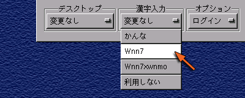
まず，日本語を入力するアプリケーション（ウィンドウ）を選択します．ここでは試しにターミナルを使ってみましょう．
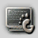
ウィンドウが現れて，その中にプロンプトが表示されたら，[Shift] キーを押しながらスペースバーをタイプしてください．
すると，どこかに という小さなウィンドウが現れます．これで日本語入力のモードに切り替わります．
という小さなウィンドウが現れます．これで日本語入力のモードに切り替わります．
そのままローマ字でタイプすると，それがひらがなになって入力されます．
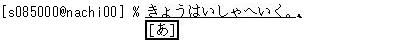
スペースバーをタイプすると，入力したひらがなが漢字かな混じり文に変換されます．
上の例では「強-歯医者へ」でひとつの文節になっています．これを短くするには，Ctrl-I をタイプ([Ctrl] を押しながら I をタイプ）するか，[Shift]を押しながら←（左矢印）キーをタイプします．文節を伸ばすには Ctrl-O をタイプするか，[Shift]を押しながら→（右矢印）キーをタイプします．
変換対象の文節を右に移動するには Ctrl-F をタイプするか，→（右矢印）をタイプします．左に移動するには Ctrl-B をタイプするか，←（左矢印）をタイプします．
次の変換候補を呼び出すにはスペースバーあるいは Ctrl-N あるいは↓（下矢印），前の候補を呼び出すにはCtrl-P あるいは↑(上矢印）をタイプします．なお，カタカナに変換するにはファンクションキーのF7，ひらがなに戻すにはF8を使います．
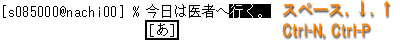
Ctrl-M か Ctrl-l か [Enter] をタイプすれば，変換結果が確定します．
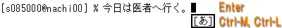
再度，[Shift]キーを押しながらスペースバーをタイプすれば，日本語入力のモードから抜け出ます．
日本語がうまく入力できないとき日本語がうまく入力できないときは，一旦ログアウトして「漢字入力」に Wnn7 を選びなおしてみてください．それでもだめなら「かんな」を選んでみてください．どうしてもだめなら教員に相談してください．
インターネットの代名詞でもある WWW (World Wide Web) を 参照するソフトウェアを「Web ブラウザ」と言います． これには Windows に組み込まれている Internet Explorer が最もよく使われていますが，その Linux 用のものは（今のところ）ありません．代わりに Linux 上ではオープンソースで開発が進められている Mozilla をはじめ，Mozilla から派生し現在ちょっとしたブームになっている Firefox，GNOME 標準で Mozilla をベースにしたタブブラウザ Galeon，KDE上で開発されている Konqueror，テキストベースの lynx や w3m，テキストエディタ Emacs の中で動く w3，それにファイルマネージャである Nautilus など，さまざまなものがあります．この講義では Mozilla から派生した（そして，Internet Explorer 以前に広く普及し現在のインターネットブームを起こした立役者でもあった） Netscape を使用します．
画面下部のパネルにある Netscape のアイコンをクリックしてください．
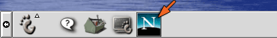
すると，Netscape が起動します（ちょっと時間がかかります）．演習室のネットワークは直接外部のネットワークにはつながっていないので，最初次のようなウィンドウが現れます．
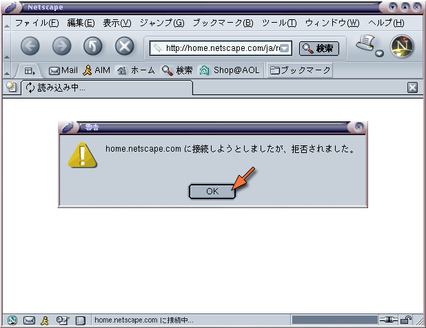
「OK」をクリックすると，何も表示されていないウィンドウが残ります．
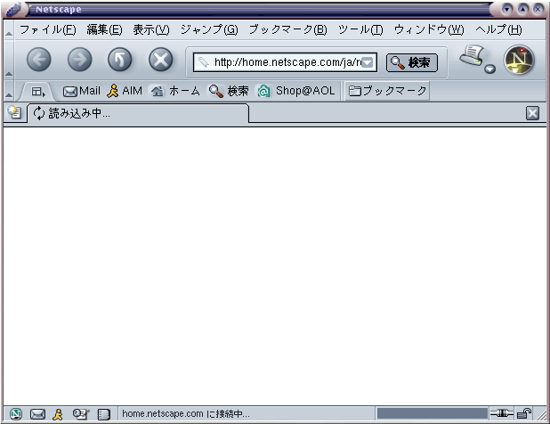
Netscape を使うにあたり，いくつか初期設定を行っておく必要があります（以下の設定は，Windows 側では既に設定されています）．まず最初に，メニューバーの「編集」メニューから「設定」を選んでください．
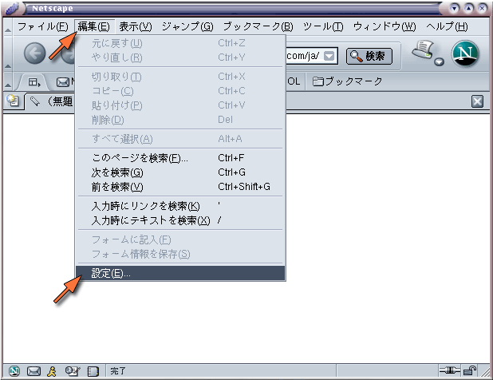
すると，下のようなダイアログウィンドウが現れます．
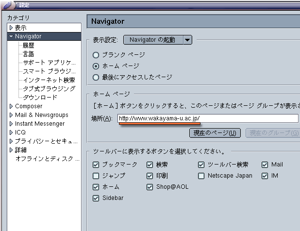
上の例では「場所」の欄に以下の内容（和歌山大学のホームページの URL）を設定しています．URL とは Universal Resouce Locator の略で，Web ページの位置を表します．
| 和歌山大学ホームページ URL |
|---|
| http://www.wakayama-u.ac.jp/ |
URLとURIWebページの住所は一般的に URL と呼ばれますが，現在ではより広義の URI (Universal Resource Identifier) という呼び方が用いられています．なお「ホームページアドレス」などという言い方は，ちょっと恥ずかしい感じがします．
「カテゴリ」という枠の中の「詳細」の左にある三角マークをクリックしてください． そこに下層のメニューが広がります．
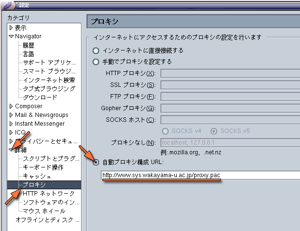
プロキシを選択し，「自動プロキシ構成 URL:」を選択した後，その下の欄に，以下の内容を設定してください．
| 自動プロキシ構成 URL |
|---|
| http://www.sys.wakayama-u.ac.jp/proxy.pac |
最後に OK をクリックしてください．
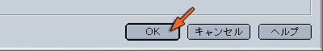
プロキシサーバについてWeb ブラウザ（クライアント）が Web サーバに対して見たい Web ページを要求すれば，Web サーバはそのページのデータを Web ブラウザに送信します．上記の設定は，この閲覧要求を相手の Web サーバに直接送る代わりに別のプロキシ (Proxy, 代理) サーバに送り，Web サーバとのやり取りを中継してもらいます．和歌山大学のプロキシサーバには，複数のコンピュータから同じサーバにアクセスがあったときにデータを共有するキャッシュサーバの機能と，Webページを通じて悪意のあるプログラム等が侵入することを防ぐ機能を提供しています．

和歌山大学のホームページを開いてみましょう（もしかしたら既に「ホーム」に設定されているかもしれません）．メニューバーのファイルメニューから「Webの場所を開く」を選ぶか，Ctrl-Shift-L をタイプしてください．
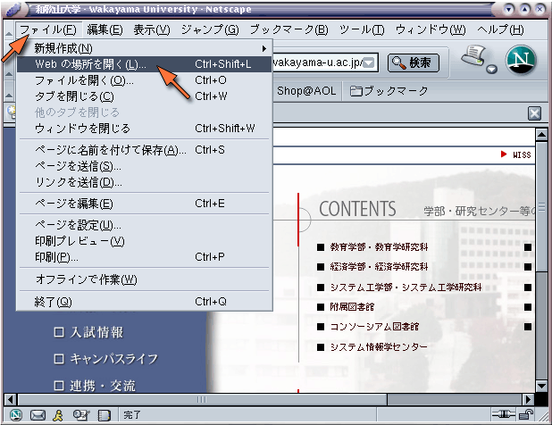
すると次のようなウィンドウが現れますので，そこに以下の URL（この講義の資料がある場所）を指定して「開く」をクリックしてください．
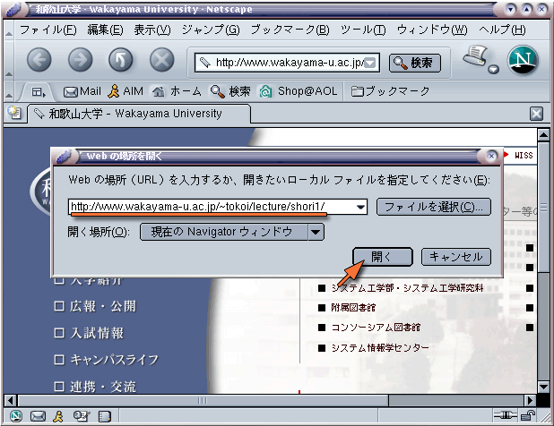
和歌山大学のホームページを開くには，ここに次の URL (Universal Resouce Locator) を指定してください．URL は Web ページの場所（住所）です．今後はこの Web ページを使って講義を進めます．
| 講義資料 URL |
|---|
| http://www.wakayama-u.ac.jp/~tokoi/lecture/shori1/ |
この URL の中の "~"（チルダ）を入力するには，[Shift] を押しながら [Backspace] の左側にある "0" のキーあるいは "^" のキーをタイプしてください．

"~"（チルダ）の字形について"~"（チルダ）は画面表示に使う字体（フォント）によって， 上の方にあったり，波線だったり，直線だったりしますが， 字形が異なるだけですから気にしないで下さい．
なお，Netscape 本体のウィンドウ上部にある欄に直接 URL を指定した後，[Enter] をタイプしてページを開くこともできます．
ブックマークは， よく参照するページを覚えておく機能です．現在，この講義の Web ページが表示されていると思いますから，これをブックマークに登録しておいてください．
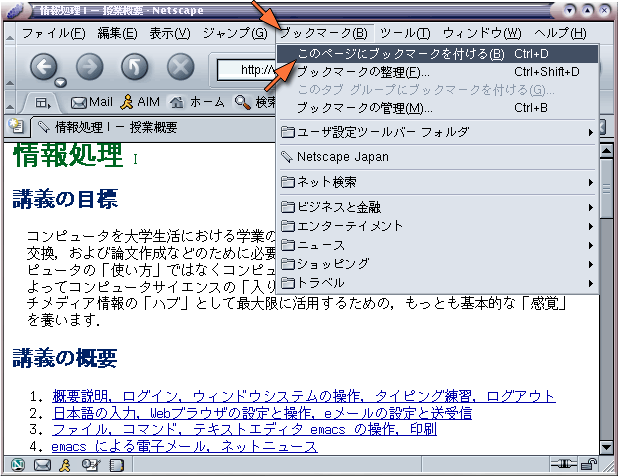
ブックマークのボタンをクリックすると， 登録されている Web ページの一覧が現れます．この一覧の一番上の「このページにブックマークを付ける Ctrl+D」を選ぶか Ctrl-D をタイプしてください．
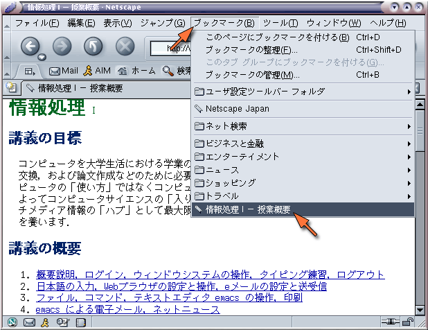
すると，この一覧の一番下に現在表示されているページが登録されます．以降はこれを選ぶだけで， すぐこのページを表示することができます．
すでにいくつかのブックマークが登録されていますが，日本からでは使いようのないものも結構あるので，必要に応じて自分で整理してください．「ブックマークの管理 Ctrl+B」を選ぶか Ctrl-B をタイプすれば， ブックマークの管理ウィンドウが現れます．
自分の見たいページを探すには，サーチエンジンと呼ばれる Web ページを利用します． インターネット上には多くのサーチエンジンがありますが，これらはおおまかに次の２つのタイプに分類することができます．
ディレクトリ型は人手によって整理されているために，無駄な情報が少なく興味のあるカテゴリのページを見つけやすいという特徴がありますが，その分，漏れや更新の遅れが大きいと考えられます．
全文検索型は Web ページに含まれるキーワードを機械的に抜き出してデータベースを構築するので，漏れが少なく更新も早いと考えられますが，検索結果の中からすばやく本当に必要な情報を見つけるには多少の経験が必要です．
ただし，最近はこれらを含むほとんどのところで，ディレクトリ型と全文検索型の両方の機能を持たせています．また複数のサーチエンジンを横断して検索できる「メタサーチ」と呼ばれるものもありますが，ここでは割愛します．このほかに，音楽専門サーチエンジンのようにターゲットを絞ったものとか，人力検索サイト「はてな」など，多様なものがあります．
Web ブラウザの Netscape にはメール機能 (Netscape Mail) を持っています．これは Web ブラウジング中にメールの送信を行う場合などにも用いられます．正しくメールの送受信ができるように，Netscape Mail のアカウント設定を行います．NetNetscape のウィンドウの左下隅にある封筒のボタンをクリックしてください．
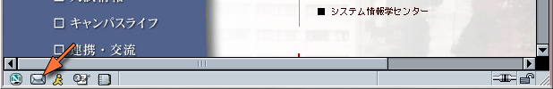
最初に Netscape Mail を起動したときは，「アカウントウィザード」が開きます．
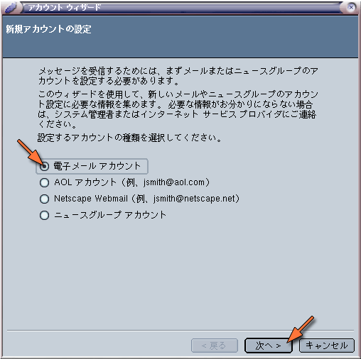
「新規アカウントの設定」では，「メールアカウント」を選択し，「次へ」をクリックしてください．
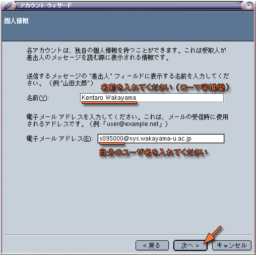
「個人情報」では「名前」の欄に自分の名前（ローマ字推奨），メールのアドレスは「自分のユーザ名@sys.wakayama-u.ac.jp」にしてください．ユーザ名が s095000 なら，メールアドレスは次のようになります(メールアドレスは利用承認書にも記載されています)．
| 自分のメールアドレスの例（利用承認書を確認してください） |
|---|
| s095000@sys.wakayama-u.ac.jp |
「次へ」をクリックして，メールサーバの情報を設定します．
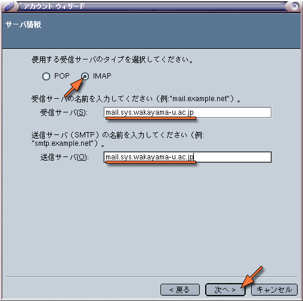
「サーバ情報」では，使用する受信サーバのタイプとして，必ず IMAP を選択してください．また，受信サーバ，送信サーバとも，以下の内容を設定してください．
| システム工学部メールサーバ |
|---|
| mail.sys.wakayama-u.ac.jp |
POP (Post Office Protocol) はメールサーバからメールを取り出す機能だけを提供しますが，IMAP (Internet Message Access Protocol) はメールサーバにメールを戻したり整理したりするする機能も提供します．したがって，POPでは読んだメールをクライアント（パソコン）側に取り込んで管理しますが，IMAPではメールサーバ上に置いたまま管理することができます．このため，複数のパソコンで同じメールアカウントを使用した場合，POPでは読んだメールがそれらのパソコンに分散して保存されてしまいます．これに対してIMAPでは，どのパソコンからも同じ内容の「受信箱」が利用できます．

設定できたら「次へ」をクリックしてください．
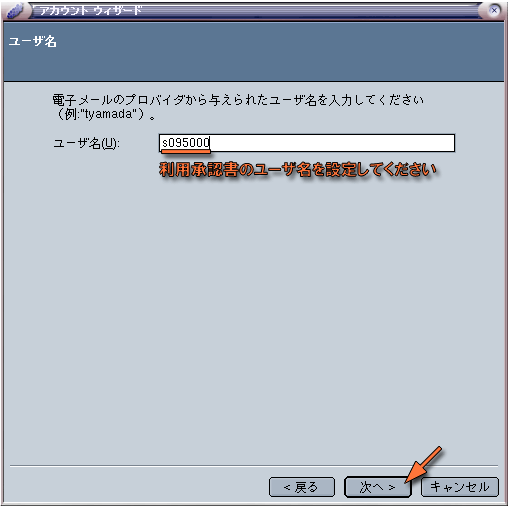
ユーザ名には自分のユーザ名を指定してください．
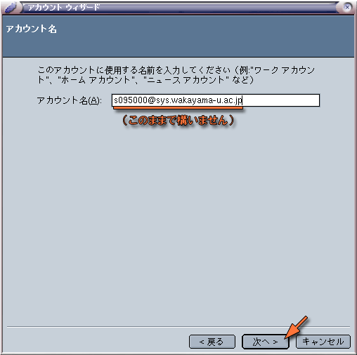
「アカウント名」はそのままで結構です(変えてもかまいません)．
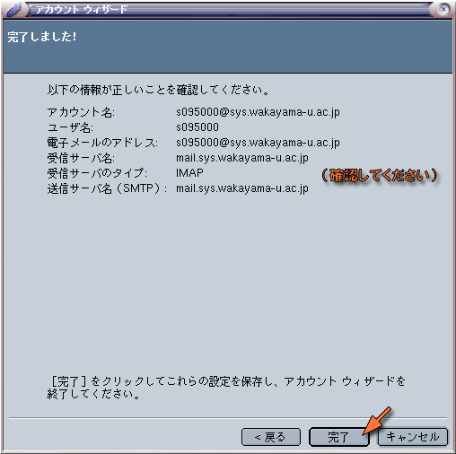
これで基本的なメールの設定が完了しました．設定が正しいかどうか確認してください．間違っていれば「戻る」のボタンをクリックして訂正してください．
「完了」をクリックすれば，Netscape の Mail が起動します．「名前」の欄にあるアカウント名をクリックすれば，そのアカウントの操作画面が現れます．自分宛てのメールを読むには，「メッセージを読む」をクリックしてください．そうするとパスワードを聞いてきます．
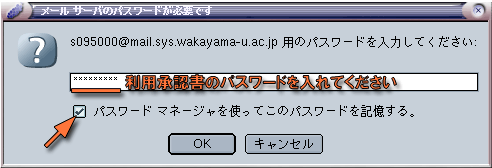
ログインのときに使うパスワードを入力してください．メールを読むたびにパスワードを入力するのが面倒なら，パスワードを記憶させておいてください．記憶させると下のようなウィンドウが現れますので，「OK」をクリックしてください．
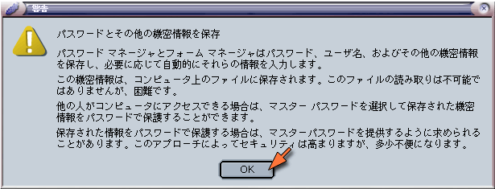
ユーザ名やパスワードに誤りがあると次のウィンドウが現れますから，「OK」をクリックしてもう一度パスワードを入れなおしてください．もしパスワードを入れなおしてもこのウィンドウが現れるときは，パスワードを入れる代わりに「キャンセル」をクリックして，この後の説明にある「このアカウントの設定を表示」を行って，設定を確認してみてください．
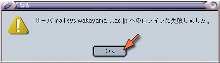
パスワードが受け付けられたら，これでメールを使用する準備ができました．「受信トレイ」には，もしかしたら何かしらメールが入っているかもしれません．
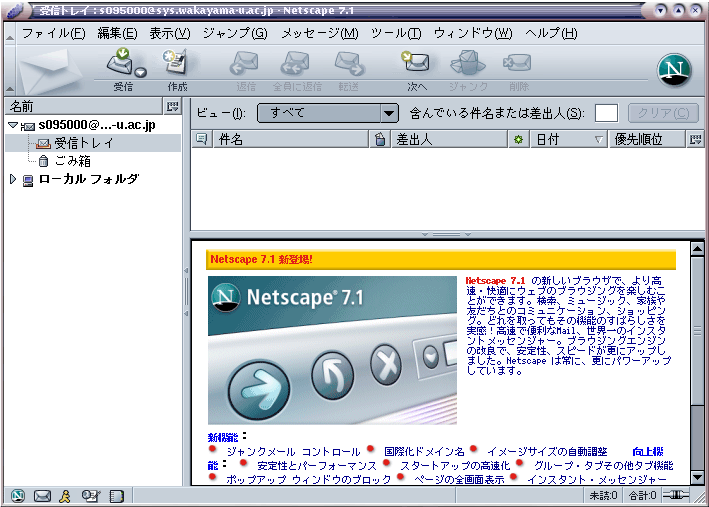
最後に追加の設定変更を一つだけ行います．Netscape Mail の左側のメニューから，先ほど作成したメールアカウント名を選択してください．
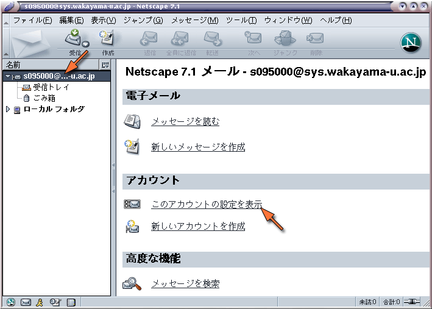
メニュー画面に切り替わりますから，その中の「このアカウントの設定を表示」をクリックしてください．
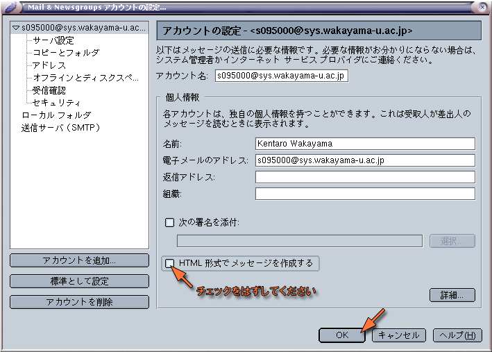
「HTML形式でメッセージを作成する」のチェックマークを消した後，「OK」をクリックしてください．
HTML形式のメッセージについてNetscape Mail ではホームページなどで用いられるHTML (Hypter Text Markup Language) を使ってメールを作成することができます．しかし，メールの受信者が使っているメールソフトによっては，この形式のメールを読めない場合があります．また，携帯電話などでも対応できない場合があるようです．仮に相手がこの形式のメールが読める場合でも，人によってはあまり喜ばれない場合もあります．そこで，相手のメール環境がわからない場合には，HTML形式のメールを送らないのがマナーだと考えます．
メールの設定が完了したら，自分宛にメールを書いてみて，ちゃんと届くかどうか確認してみてください．
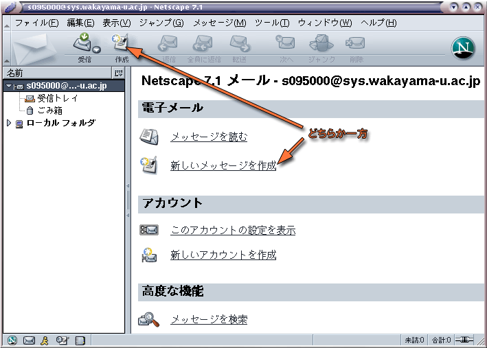
ウィンドウの上方にあるアイコンの列（ツールバー）の中の「作成」をクリックするか，「新しいメッセージを作成」をクリックしてください．
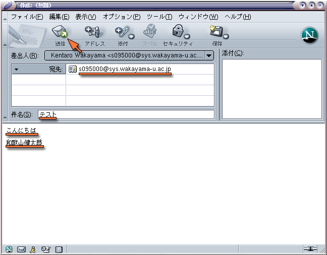
「宛先」に自分のメールアドレスを指定し，「件名」と「本文」を書き加えてください．本文の最後に「署名」を書いたら，ツールバーの「送信」をクリックしてください．[TAB] キーをタイプすれば，欄を移動できます．
ウィンドウの上方にあるアイコンの列（ツールバー）の中の「受信」をクリックするか，「メッセージを読む」をクリックしてください．
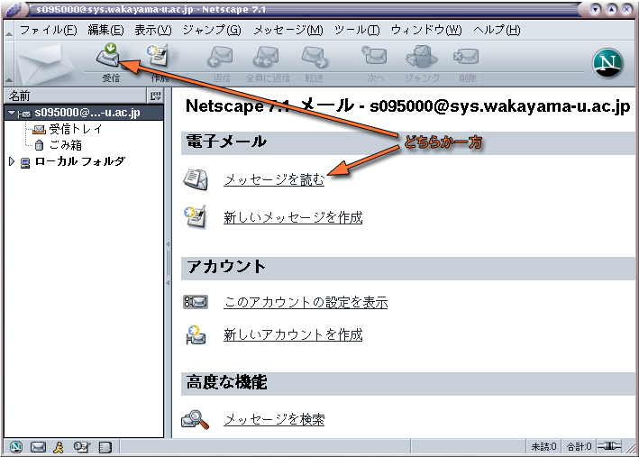
自分宛のメールが届いていたでしょうか？もし何も届いていなかったり，MAILER-DAEMON からメールが届いていたりした場合は，何か設定に問題があります．その場合はもう一度設定を確かめてください．原因がわからなければ質問してください．
MAILER-DAEMON からのメール出したメールが宛先の間違いや何らかのトラブルで相手に届けられなかったときは，MAILER-DAEMON からメールが送り返されてきます．これはコンピュータが自動的に発送するメールなので，このメールには返事を書かないでください．
自分宛のメールを読むことができれば，今度は担当教員 tokoi@sys.wakayama-u.ac.jp 宛てに何かメッセージを書いてください．届いたメールにはごく簡単に返事を書きます．
注意事項ネチケット
人と人とがメールや Web，チャットなんかでつながった「ネットワークコミュニティ」を，実社会とは別の「仮想世界」のように感じてしまうかもしれません．しかし実際にはそこは，普通の社会の一つの断面に過ぎません．そこでの振舞いには，実社会と同じモラルやマナーが求められます．ただ，媒体として通信ネットワークが介在するために，さらにネットワークコミュニティ特有の配慮も必要になります．ネットワークコミュニティにおけるこのようなエチケットのことを「ネチケット」と呼んでいます．ネチケットについては，下記に優れたなリンク集があります．あなたの目の前のコンピュータの向こう側にも， 「人」がいるんだと言うことを忘れないでください．セキュリティ
インターネットの世界の中にある「悪意」から自分自身を守るには，いくつか知っておかなければならない事項があります．メールに関しては，添付ファイルは中身が確認できなければ絶対開かないことを肝に銘じておいてください．添付ファイルでなくてもチェーンメール（「不幸の手紙」みたいなもの）やネズミ講の勧誘，犯罪を誘発しそうな Web サイトへの誘いなど，さまざまな「悪意」が送りつけられてきます．嫌な言い方ですが，「他人の言うことは，とりあえず信用しない」ことを基本姿勢にすることが，そういう悪意から身を守る第一歩でしょう．
パスワードの変更やメールの転送設定についての説明をここに用意しています（このページは学外から参照できません）．
「Netscape (Webブラウザ)」「Netscape Mail」のいずれでも，「ファイル」メニューから「終了」を選べば，Netscape を一気に終了することができます．
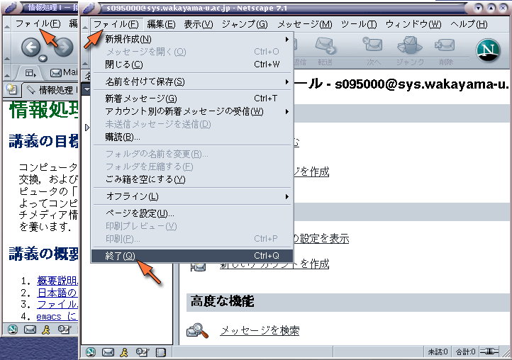
なお，次回 Netscape を起動したときに「Netscape の登録」のウィンドウが現れるかも知れません．
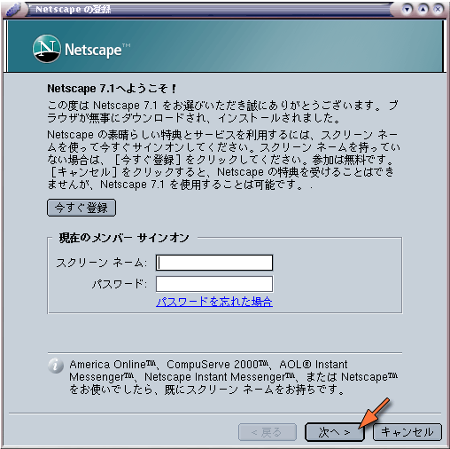
スクリーンネームは取得してもかまいませんが（Netscape 社から無料のメールアドレスがもらえますし，AOL Internet Messenger も使えるようになります），この講義では必要ないので，ここでは「キャンセル」をクリックしてください．すると念押しのウィンドウが現れます．
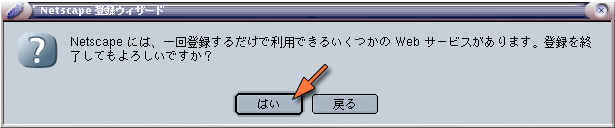
ここでは「はい」をクリックしてください．しばらく待っていると，Netscape の本体が起動します．
次のキーワードに関する情報を Web を利用して調べ，簡単に説明してください．なお，それぞれ情報源とした Web ページの URL も示してください．
情報が見つからないキーワードの解答は省略して構いません．解答は４月２８日までにメールでtokoi@sys.wakayama-u.ac.jp に送ってください．
自宅等学外からの課題メール送信について今回の課題は大学の設備を使ってメールを出せるかどうかの確認も兼ねているので，自宅や携帯からメールを送ってもらってもあまり嬉しくありません．自宅等の環境も有効に活用して欲しいとは思うので学外からの課題メールも受け取りますが，その際にもメールの From: は，できれば大学のメールアドレスにしてください．そうしないと私がメールを受信する時に自動振り分けされないため，課題メールを見落としてしまう可能性があります．それから，HTML形式のメールもスパム（迷惑メール）と間違えて読まない可能性があるので気を付けてください．この講義では皆さんに「HTML形式のメールを送らない設定」をしていただいているので，問題ないと思います :-)